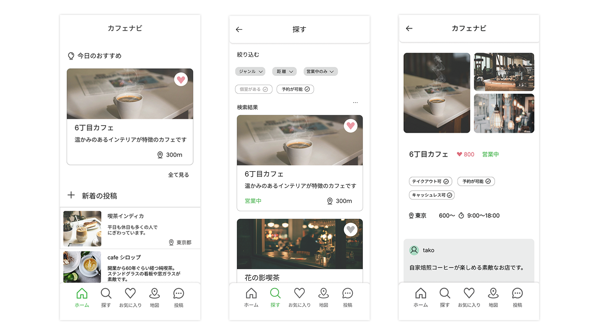
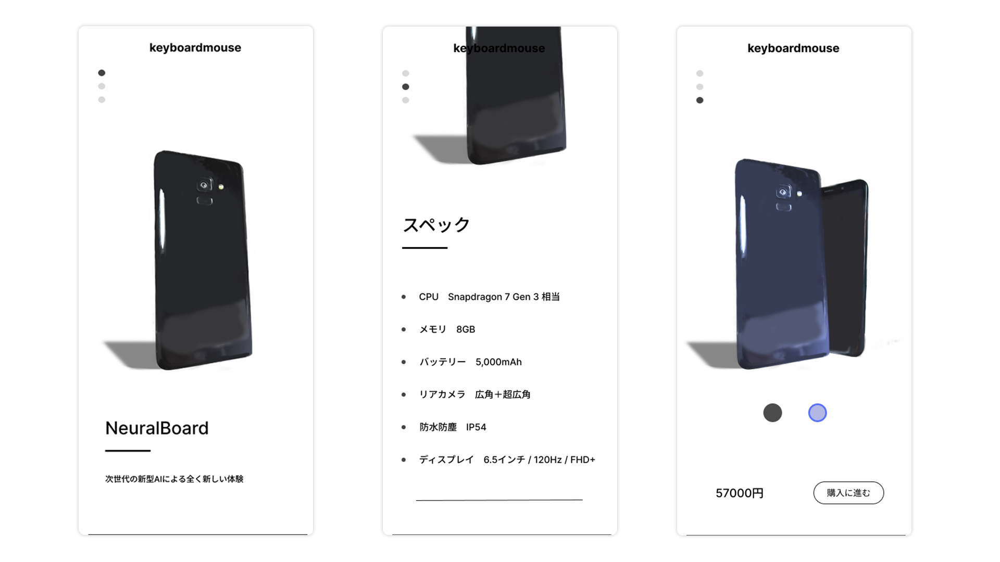

UIデザインの練習として、Figmaを使用して作成したものです。
一つ目の画像はカフェ検索アプリのUIなのですが、このUIではGoogle mapと差別化することを大切にしました。
具体的には「今日のおすすめ」と、「新着の投稿」という要素で知らないカフェを発掘できることが差別化するために大切だと考えました。
二つ目はスマートフォン販売サイト内の商品ページになります。
重要視したのは説明が無くても視覚的に操作方法がわかることです。
要素を少なくすることでその要件は満たせましたが、商品価値を表現できていないことが課題だと感じています。
要素を増やしつつも視線誘導できるようなデザインを模索していきます。